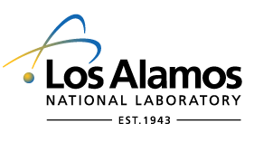
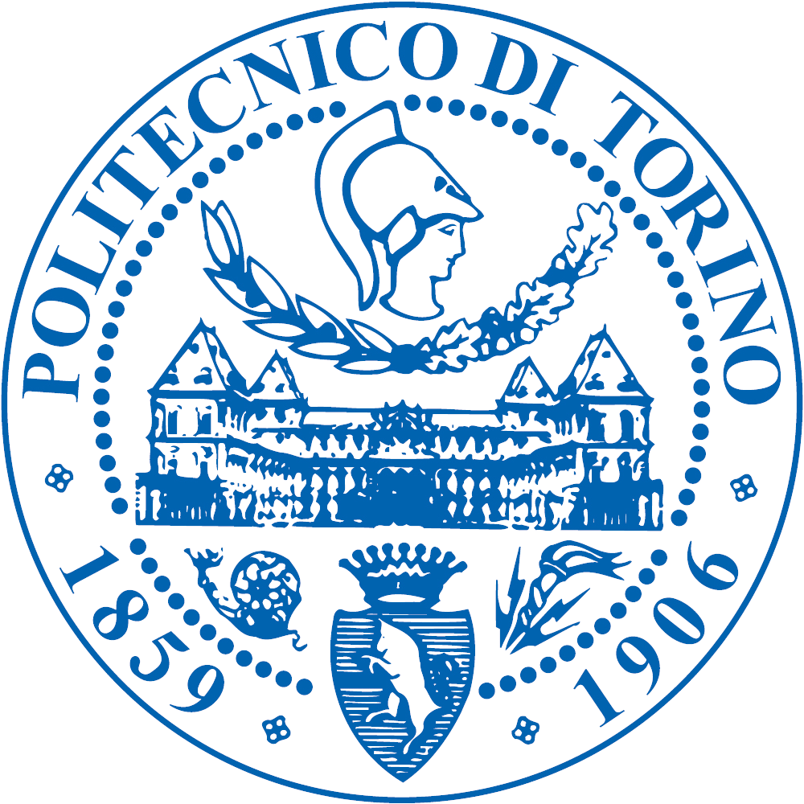

Curriculum Vitae
My CV can be downloaded here (last update: Oct 2019).
My list of publications can be downloaded here (last update: Oct 2019).
Research experience
Research Associate (since 2019) University of Colorado Cooperative Institute for Research in Environmental Sciences Boulder, CO, USA
 Scientific Staff Member (since 2014)
Centrum Wiskunde & Informatica
Multiscale Dynamics
Amsterdam, The Netherlands
Scientific Staff Member (since 2014)
Centrum Wiskunde & Informatica
Multiscale Dynamics
Amsterdam, The Netherlands
 Postdoc (2010-2013) Los Alamos National Laboratory T-5 Plasma Physics and Applied Mathematics Los Alamos, NM (USA)
Postdoc (2008-2010) Astronomy Unit, Mathematical Sciences London, UK
Education
PhD in space plasma physics (2008) Queen Mary University of London Thesis: Kinetic aspects of solar wind turbulence (advisor: Prof. Burgess)
 MSc in Nuclear Engineering (2004) Polytechnic of Turin (Italy) Thesis: Model of bifurcated current sheets in the Earth’s magnetotail: equilibrium and stability (advisor: Prof. Lapenta)